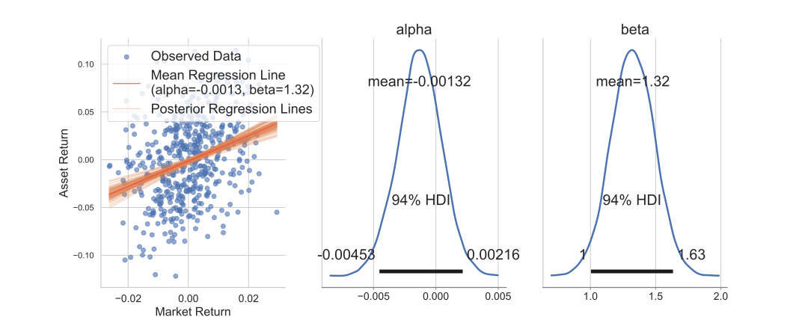
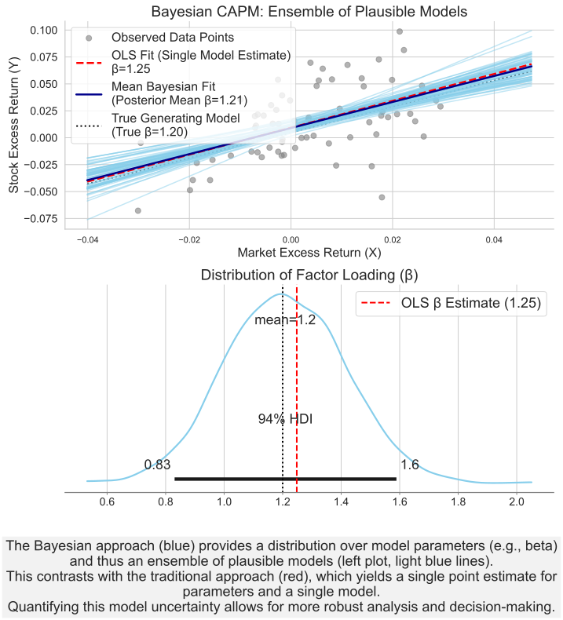
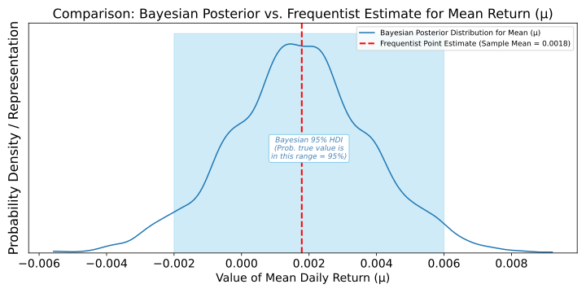
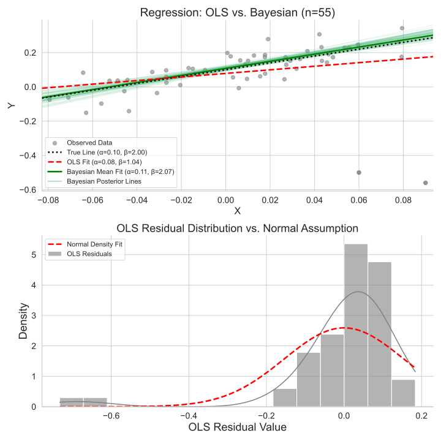
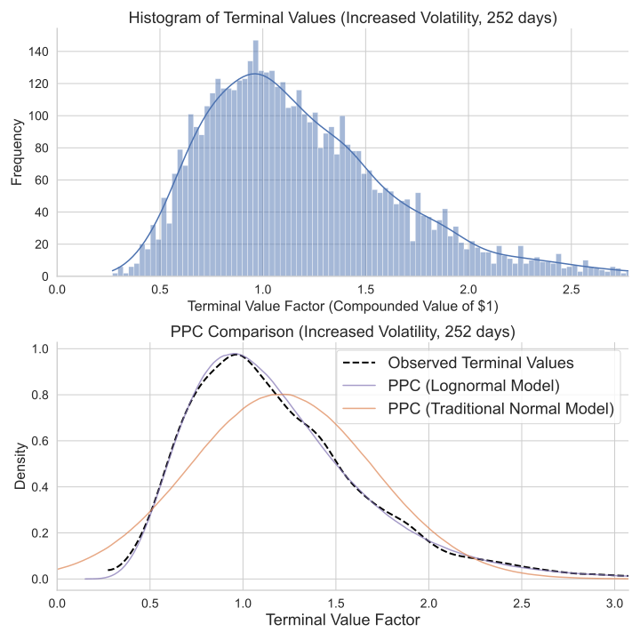
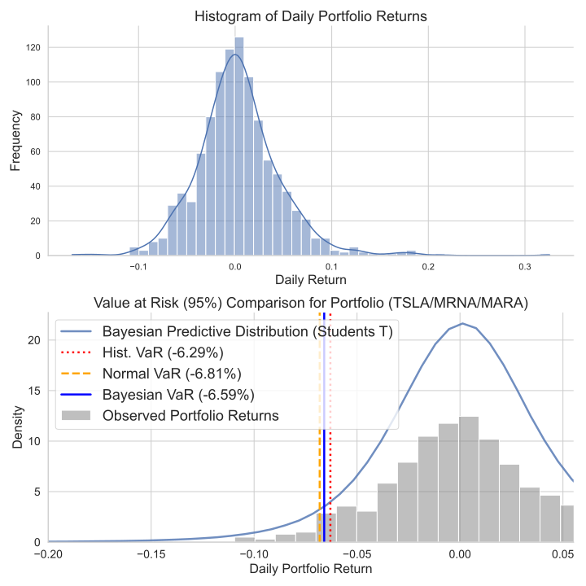
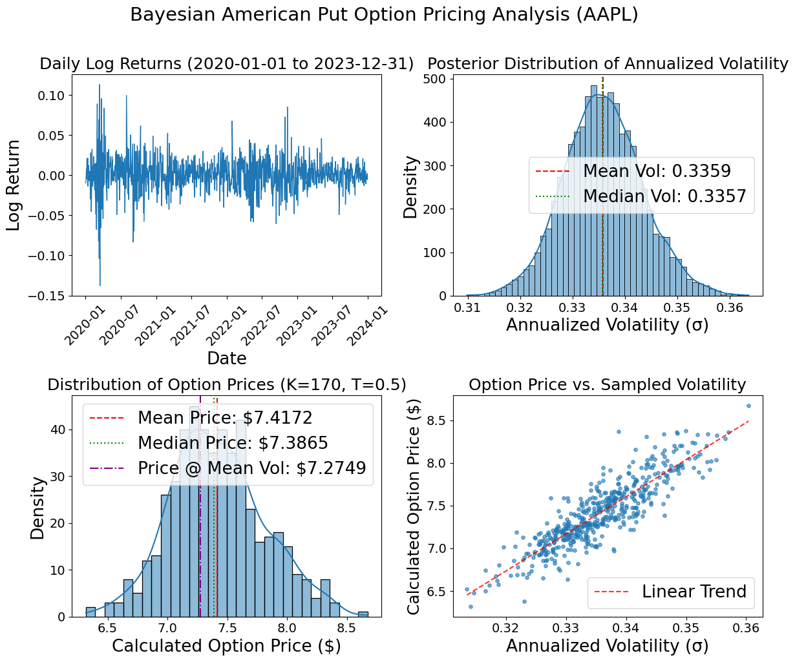

Application of Bayesian Computation in Finance

Figure 1: Bayesian CAPM regression

Finance is the study of risk, and financial analysis is the study of decision-making under risk. No field stands to benefit more from the uncertainty quantification offered by Bayesian analysis. Today, thanks to decades of optimization, advanced algorithms can solve sophisticated financial models in seconds. PyMC is at the forefront of delivering these algorithms to users across a wide range of scientific fields and disciplines. Finance, however, has lagged behind. In this article, we highlight three ways in which financial analysis can benefit from the Bayesian toolkit:
Modeling and quantifying uncertainty — essential for risk assessment.
Overcoming the restrictive assumptions of traditional econometric models.
Managing complex model structures involving non-normal and exotic probability distributions.
The accelerated progress in Bayesian computational methods over the past decade has led to widespread adoption of Bayesian statistical techniques across numerous scientific fields and industries. Open-source packages such as PyMC have significantly broadened access to advanced Bayesian inference techniques. Despite clear advantages and alignment with industry requirements, however, Bayesian statistical techniques remain relatively underutilized in the financial industry. The resulting underutilization of Bayesian methods represents a massive opportunity, as they offer several compelling benefits for financial applications.
What are Bayesian Statistics?
Bayesian statistics is the native language of probability. It allows you to encode your beliefs about the world as probability distributions, and then test those beliefs against data. Most powerfully, the result of this test is another probability distribution—representing all plausible model configurations that could have generated the data.
Unlike traditional frequentist statistics, which treats parameters as fixed but unknown constants, Bayesian methods view parameters as random variables with explicit probability distributions. In contrast with an OLS regression, which returns only a single estimate with an opaque confidence interval, the Bayesian approach provides a clear and interpretable output. For example, after observing data, you might be 95% certain that a value lies within a specific range. Moreover, these distributions can be further manipulated—propagating and preserving uncertainty as abstract model parameters are translated into actionable business metrics.
One of the most compelling advantages of Bayesian statistics in finance is that, unlike other approaches, the Bayesian framework offers a single, simple, and universal estimator: the posterior. This stands in sharp contrast to other approaches, where model assumptions often impose severe restrictions on the types of problems that can be addressed with each estimator. Once a model and prior beliefs — which can encode hard-earned domain knowledge about markets, instruments, or investor behavior — are specified, the posterior becomes the central tool for all downstream analysis.
The posterior not only yields parameter estimates but also gives analysts immediate access to everything needed to make informed decisions. It enables simulation from generative models, direct quantification of uncertainty, and coherent testing of hypotheses or counterfactuals. In the inherently noisy and uncertain world of finance, this comprehensive and structured approach is especially powerful. It allows practitioners to incorporate prior market understanding, respond flexibly to new data, and rigorously assess the risks or plausibility of future scenarios — all from a single inferential engine.
The last few decades have witnessed remarkable progress in Bayesian computational methods, transforming what was once a theoretically elegant but intractable approach into a practical tool set for complex real-world problems. The refinement of Markov Chain Monte Carlo (MCMC) methods revolutionized Bayesian computation by providing ways to sample from complex posterior distributions that lack closed-form solutions. PyMC has lead the way in democratizing access to powerful Bayesian tools, by combining a user-friendly API, a permissive open-source license, and best-in-class implementations of cutting edge algorithms.
Why use it in finance
Uncertainty Quantification
One of the most impactful contributions of Bayesian statistics to finance is their natural ability to quantify model uncertainty. Traditional financial models often rely on single-point estimates—one “best guess” of expected returns or risk exposures. But financial data is noisy, and the structure of markets is constantly shifting.
Bayesian inference does not return a single model; it returns a posterior distribution over a family of plausible models, each consistent with the observed data and prior beliefs. This means that instead of selecting one model and ignoring the rest, we can propagate the full range of model uncertainty through to our forecasts and decisions. To illustrate this, consider a simple but ubiquitous model: a basic linear regression to estimate the CAPM. As seen on Figure 2, the Bayesian approach gives us not just a single estimate of market beta, but a distribution over them. This allows us to simulate from an ensemble of models that are all consistent with the data. This ensemble forecasting approach enables more robust backtesting and scenario analysis, helping practitioners avoid overconfidence and better understand the range of possible outcomes. By embracing model uncertainty, we reduce one of the most pervasive and underacknowledged sources of risk in financial modeling.
Figure 2: Quantifying parameter uncertainty

In asset pricing or risk factor models, treating parameters as fixed can lead to severe underestimation of tail risks, excessive confidence in model forecasts, and fragile investment strategies that fail under real-world deviations. In contrast, Bayesian approach enables analysts to visualize the range of plausible parameter values, detect features like multimodality, and examine dependencies between parameters, we can observe an example of this on Figure 3.
Figure 3: Full distribution estimate vs. frequentist point estimate

Not everything is normal!
Traditional financial econometric models—such as ordinary least squares (OLS) regression, and standard time series methods—typically assume that model residuals (errors) follow a normal distribution for inference purposes. This assumption simplifies inference and underpins key procedures like hypothesis testing and confidence interval construction. But financial data is well known to violate this assumption, exhibiting skewness, heavy tails, and excess kurtosis. These features can lead to biased estimates, underestimated risk, and unreliable conclusions when using traditional methods.
Bayesian statistics offers a more flexible framework. Rather than assuming normally distributed errors, Bayesian models allow the analyst to specify alternative distributions that better reflect empirical realities. With probabilistic programming tools like PyMC, this boils down to a one-line change of the observation distribution, with access to a large pool of explicit alternative distributions to choose from such as skew-normal, Laplace, or generalized hyperbolic distributions. This flexibility enhances the robustness of parameter estimates and improves predictive performance, especially in the presence of non-normal data.
This point can also be illustrated with a simple CAPM regression. Let's assume assume a linear data-generating process: $excess \ returns=0.1+1.2 * market \ returns +\boldsymbol{\varepsilon}$, with known co-variate $market \ returns$ and an error term $\boldsymbol{\varepsilon}$ that is drawn from a distribution with strong negative skewness and heavy tails. As shown in Figure 4, the OLS regression line (in red) significantly deviates from the true line (black dashed), producing a biased slope estimate. Figure 4 further reveals that the OLS residuals deviate sharply from normality, invalidating standard OLS inference.
In contrast, a Bayesian approach implemented in PyMC directly accommodates the non-normal error structure. By defining a custom likelihood based on the Skewed Student’s T-distribution, we allow the model to learn not only the intercept and slope but also the shape of error distribution. The resulting Bayesian estimate of the $beta$ (green line in Figure 4) closely matches the true value. Importantly, no math or special estimators are required to achieve this result! We only specify that we believe, a priori, that errors might have negative skew and long tails, and the magic of Bayesian inference does the rest. In the lower segment of Figure 4, the mismatch between OLS residuals and the normal distribution becomes clear, reinforcing the need for more flexible error modeling.
Figure 4: Skewed errors — OLS bias vs Bayesian robustness

This particular example underscores how PyMC provides powerful tools for handling realistic, complex error structures in financial data.
Consequently, the Bayesian framework allows you to overcome limitations imposed by restrictive assumptions about the error distribution, freeing your mind to focus on the data itself rather than on a specific latent quantity — the residuals — which you may have little to no intuition about.
Bayesian statistics also offer remarkable flexibility in specification of the underlying distribution of the data itself. Traditional methods that often assume the dependent variable follows a normal or log-normal distribution. It is well-established, however, that financial variables such as asset returns, risk premia, and volatility often deviate substantially from the Gaussian assumption. These variables frequently exhibit heavy tails, skewness, and volatility clustering. These features are often not captured adequately by traditional models. Ignoring them can lead to systematic underestimation of risk and misleading inference. This can be particularly pernicious in stress scenarios or tail events that matter most for financial decision-making.
Bayesian paradigm enables the use of alternative statistical distributions that better capture the empirical features of financial variables. For example, asset returns can be modeled using skewed distributions to account for asymmetry, or heavy-tailed distributions such as the Laplace or generalized hyperbolic to represent extreme market movements more realistically. In Bayesian modeling, these choices are not constrained by closed-form solutions, as posterior inference is performed through numerical methods such as Markov Chain Monte Carlo (MCMC).
A practical example of this flexibility is the use of the skew-normal distribution to model asset returns. In many financial markets, due to asymmetric information, regulatory effects, or behavioral biases, return distributions exhibit systematic skewness. For instance, equity returns often display left-skewness, reflecting a higher probability of large negative shocks. Using PyMC, it is straightforward to specify a model in which returns are assumed to follow a skew-normal distribution, allowing one to capture these asymmetries directly within the likelihood function. This results in more realistic risk estimates and posterior inferences that appropriately reflect the downside risk—critical for risk management, option pricing, and stress testing.
Figure 5: Modeling a skewed distribution

Another example, are compound returns over multiple periods. As these returns are calculated as the cumulative product of $(1 + return)$, This will, under certain assumptions, give rise to a lognormal distribution. This property is relevant in modeling long-term investment outcomes, portfolio growth, or asset price trajectories. In Bayesian frameworks like PyMC, this behavior can be explicitly modeled by specifying lognormal priors or likelihoods, offering a more coherent probabilistic interpretation of compounded wealth and accommodating uncertainty in both parameter estimates and structural assumptions.
Figure 6: Modeling terminal values with lognormal distribution

Beyond standard skewed or heavy-tailed distributions, PyMC also supports the use of more exotic families, such as the generalized hyperbolic distribution or mixture models. These are particularly powerful in contexts like high-frequency trading or credit risk, where data can exhibit extreme kurtosis, multimodality, or time-varying heteroskedasticity.
Risk management and probabilistic modeling: a perfect match
Bayesian statistics offers a compelling framework for risk management in finance. Probabilistic outputs are especially useful for financial decision-making, where uncertainty is not a peripheral consideration but a central feature of the environment.
In risk management, the ability to quantify and propagate uncertainty through models is critical. Armed with a posterior distribution, financial analysts can construct comprehensive risk profiles. These profiles fully capture the range of plausible outcomes and their associated probabilities, providing a much richer basis for evaluating exposure, stress testing, and designing hedging strategies. For example, in estimating future losses, Bayesian models can generate posterior predictive distributions that capture not just the central tendency but also the asymmetry and fat tails that often characterize financial data.
These techniques can be used to enhance Value-at-Risk (VaR) methodologies. Traditional VaR models typically rely on strong assumptions—such as normally distributed returns and constant volatility—that often fail during periods of market stress. A Bayesian approach allows the analyst to incorporate arbitrary distributions for modeling returns. Plus, it allows the inclusion of uncertainty in parameters and predictions of the return model. Using PyMC, one can construct a Bayesian VaR model by specifying a data generating distribution for returns obtaining probability distributions over parameters of interest.
This probabilistic VaR estimate is more robust than classical VaR because it reflects not only the risk inherent in future returns but also uncertainty in the underlying model parameters. Moreover, the Bayesian framework naturally extends to conditional VaR (or expected shortfall), scenario analysis, and stress testing. For instance, posterior samples can be used to generate plausible market stress scenarios that account for the joint distribution of multiple risk factors. These scenarios are internally consistent and probabilistically grounded, making them more reliable than ad hoc stress tests.
We present a brief example of Value at Risk (VaR) estimation for an equally weighted portfolio composed of three stocks: Apple, JPMorgan, and Pfizer. Two traditional VaR approaches are first computed: Historical VaR, which directly uses a lower percentile (e.g., the 5th percentile) of the observed historical portfolio returns; and Parametric (Normal) VaR, which assumes normally distributed returns and derives the VaR using the historical mean and standard deviation.
We then develop a Bayesian model using PyMC, specifying a Student’s t-distribution as the likelihood function for portfolio returns. This model allows for greater flexibility by explicitly modeling the heavy tails and potential outliers. The Bayesian inference process estimates not only the location and scale parameters but also the degrees of freedom, which control the thickness of the tails. The resulting probability distribution of the predicted values reflects a higher likelihood of extreme negative returns compared to the normal assumption. Consequently, the Bayesian VaR more accurately captures extreme outcomes, providing a more robust estimate of potential portfolio losses and their respective probabilities.
Figure 7: Bayesian Value at Risk

Option pricing
The same Bayesian framework that enhances risk management also offers powerful tools for option pricing. Both domains share a core challenge: making informed decisions under uncertainty. In risk management, we focused on modeling extreme losses and understanding the distribution of potential outcomes. In option pricing, the challenge lies in valuing derivative contracts when key inputs are uncertain.
PyMC offer several major benefits for improving option pricing models, particularly when uncertainty around inputs—such as volatility, interest rates, or underlying asset dynamics—is significant. Traditional models like Black-Scholes assume fixed parameters, leading to a single-point estimate of the option price. In reality, however, these parameters are uncertain and often time-varying. This enables to capture the inherent uncertainty in the option pricing inputs and propagate it through to the pricing outputs.
Furthermore, PyMC models are natively data-generating engines, which can be used to perform Monte Carlo simulations for complex option pricing problems—especially when closed-form solutions are unavailable. Once the posterior distributions of the model parameters (e.g., volatility or drift in a stochastic process) have been estimated via Bayesian inference, one can simulate thousands of future paths for the underlying asset using these distributions by running the same PyMC model in "forward" (or simulation) mode. For each simulated path, the payoff of the option can be computed and discounted back to present value. This yields a posterior distribution of the option’s price, from which summary statistics (e.g., posterior mean price, credible intervals, tail risk metrics) can be derived.
A major advantage is that PyMC handles high-dimensional simulation natively through vectorization and labeled dimensions. Once the core model is defined, users can simply call sample_prior_predictive, and PyMC will automatically handle broadcasting, simulation structure, and the dimensionality of inputs and outputs—eliminating the need to manually manage loops or reshape arrays.
Here we implement the pricing of an American put option for Apple by explicitly accounting for uncertainty in the underlying asset's volatility. Instead of assuming a fixed volatility, we employ a Bayesian statistical model using PyMC to estimate the probability distribution of the daily volatility parameter, treating it as an unknown quantity inferred from the historical returns. The result is not a single volatility number but a posterior distribution representing plausible volatility values given the observed data. The core pricing then uses the Longstaff-Schwartz Monte Carlo (LSMC) algorithm, which simulates numerous potential stock price paths according to Geometric Brownian Motion and uses regression to estimate the optimal early exercise strategy characteristic of American options. Crucially, this LSMC simulation is performed repeatedly, with each run drawing a different volatility value from the previously estimated Bayesian posterior distribution. The final output is therefore a distribution of potential option prices. This can be visualized alongside the input data, the inferred volatility distribution, and the relationship between volatility and price. Together, these elements offer a comprehensive view of the pricing process under uncertainty.
Figure 8: Bayesian Option Pricing

The primary contribution of the Bayesian methodology here is the rigorous quantification and propagation of parameter uncertainty, specifically regarding volatility. Traditional option pricing often relies on a single point estimate for volatility (like historical or implied volatility), implicitly ignoring the fact that this parameter is itself uncertain. The Bayesian approach, by contrast, explicitly models volatility as a random variable and uses the historical data to derive its posterior probability distribution. This distribution captures the range of likely volatility values and our degree of belief in each. By subsequently integrating over this entire distribution, the resulting distribution of option prices directly reflects the impact of this volatility uncertainty. This yields a more robust and informative result than a single price estimate, which is crucial for risk management and understanding the sensitivity of the option price to market conditions.
Additional topics
The final key advantage of PyMC for financial modeling is its flexibility in handling complex and hierarchical structures—features that frequently arise in financial data. Financial markets are rarely uniform. For example, different assets may exhibit varying levels of volatility, sectors may respond differently to macroeconomic shocks. PyMC makes it easy to build hierarchical Bayesian models in which parameters can vary across groups while still sharing information through higher-level distributions. This partial pooling approach introduces automatic regularization and leads to more robust inference, particularly in environments with sparse or noisy data.
Moreover, PyMC enables professionals to flexibly construct models that go beyond the limitations of traditional parametric frameworks. In financial applications, it is often necessary to account for nonlinear relationships, latent variables, and time-varying dynamics that cannot be easily captured using standard econometric techniques. PyMC supports a wide range of model types, including state-space models, hidden Markov models, and Gaussian Processes, all of which can be adapted to reflect the evolving nature of financial markets.
Bayesian methods extend naturally to time series analysis through state space models (SSMs), which are well-suited for capturing the dynamic and complex nature of financial data. PyMC enables flexible modeling of latent components such as trend, seasonality, and dynamic regression relationships that evolve over time, allowing for interpretable forecasts and rigorous uncertainty quantification. If you want to learn more about this module, check out our webinar: webinar link
On the computational side, for large-scale financial applications, PyMC’s integration with PyTensor brings powerful optimization and acceleration capabilities. PyTensor’s ability to compile highly optimized, numerically stable code for CPUs (and, through its integration with JAX, and PyTorch, GPUs) makes it ideal for handling the computational demands of large-scale financial modeling, from Monte Carlo simulations to real-time risk assessment.
Conclusions
This blog post has highlighted several critical advantages of Bayesian techniques in finance: their ability to accommodate non-Gaussian features in error terms and return distributions, their intuitive and comprehensive approach to uncertainty quantification, and their capacity to model real-world phenomena such as asymmetry, fat tails, and compounding effects. Each of these dimensions reveals an opportunity to go beyond traditional econometrics approaches by adopting the Bayesian paradigm.
By leveraging modern computational tools like PyMC and its PyTensor backend, finance professionals can reap the benefits of Bayesian statistics. Embracing Bayesian statistics not only enhances the analytical rigor of financial modeling but also equips practitioners to better navigate uncertainty, providing an essential advantage in today’s rapidly evolving financial landscape.
Working with PyMC
If you are interested in seeing what we at PyMC Labs can do for you, then please email info\@pymc-labs.com. We work with companies at a variety of scales and with varying levels of existing modeling capacity. We also run corporate workshop training events and can provide sessions ranging from introduction to Bayes to more advanced topics.
Work with PyMC Labs
If you are interested in seeing what we at PyMC Labs can do for you, then please email info@pymc-labs.com. We work with companies at a variety of scales and with varying levels of existing modeling capacity. We also run corporate workshop training events and can provide sessions ranging from introduction to Bayes to more advanced topics.